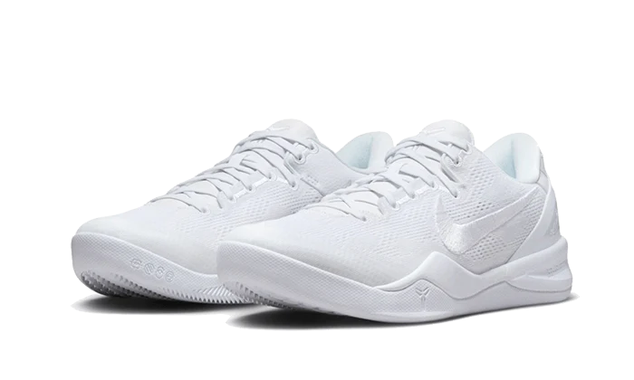

Kobe Proto 8
O sapato tem uma construção de malha branca com a marca Swoosh tonal na lateral. O balcão de calcanhar, os cadarços e a língua aparecem em branco, assim como a marca Nike de Kobe na língua.

O sapato tem uma construção de malha branca com a marca Swoosh tonal na lateral. O balcão de calcanhar, os cadarços e a língua aparecem em branco, assim como a marca Nike de Kobe na língua.